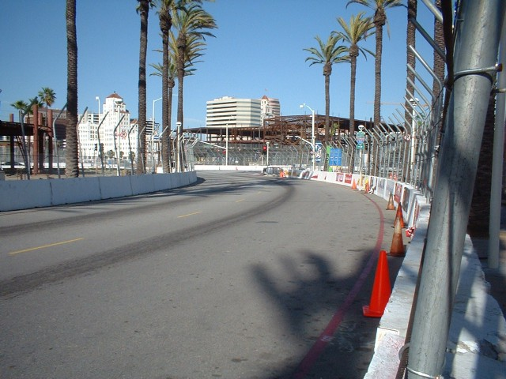
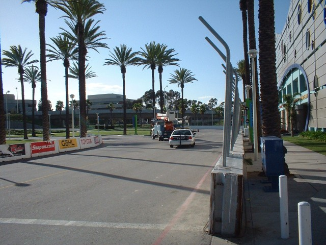
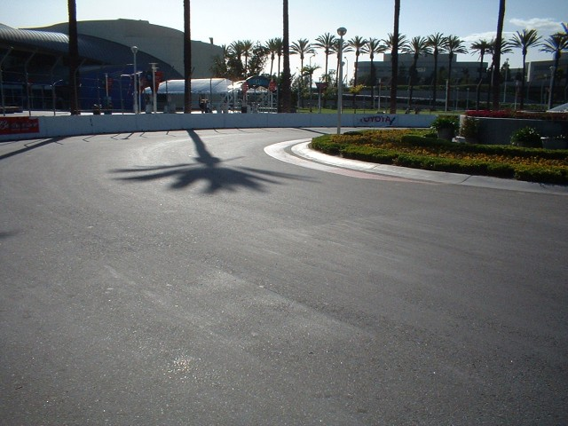
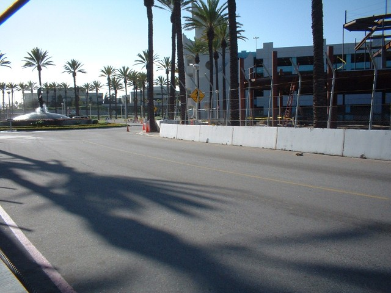

Long Beach, California, United States
Type: Street Circuit
Used: 1975+
Photographs Taken: 13 April, 2003
Designed by former Formula 1 driver Dan Gurney, the circuit uses the city streets along the seafront of Long Beach in southern California. Organised by Chris Pook, the first Grand Prix of Long Beach was held for Formula 5000 in 1975. This was followed the year after with a round of the Formula 1 world championship, the US Grand Prix West. The race transfered to the CART series from 1984. The circuit has seen many configuration changes over the years as certain sections were bypassed or diverted because of new developments within the city.
Numbers on the map indicate where the pictures were taken. See below to
view the photographs.
Return to racingcircuits.net's Photo Archive Main Index

Approaching Toyota bend

Looking back at Toyota bend

View back to the chicane

Another view back to the chicane
Photographs ©Jon Clark. Reproduced here with kind permission.